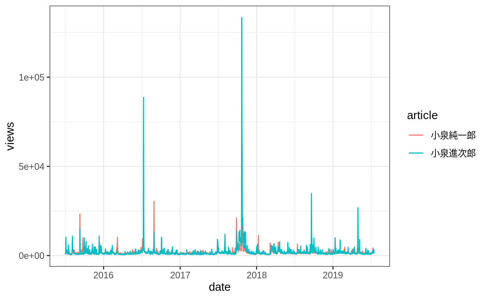
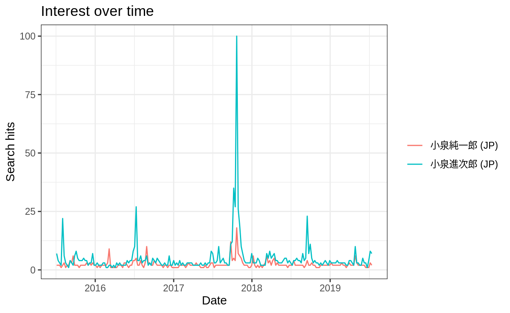
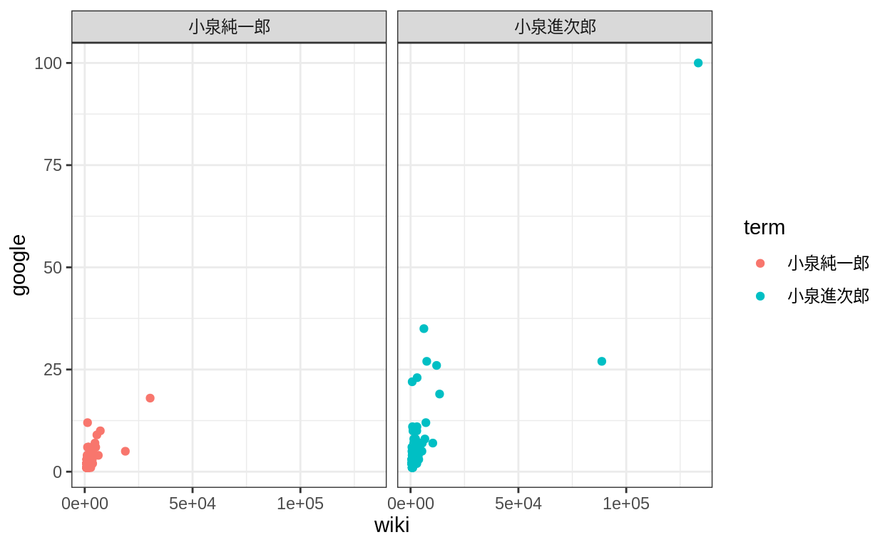
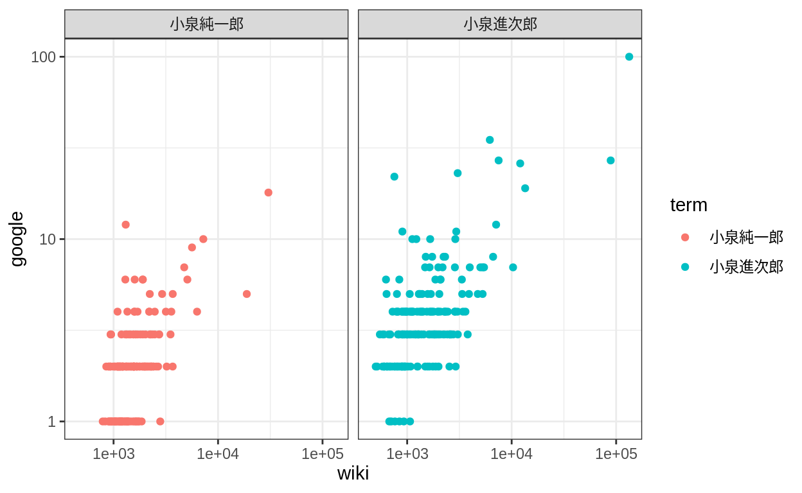
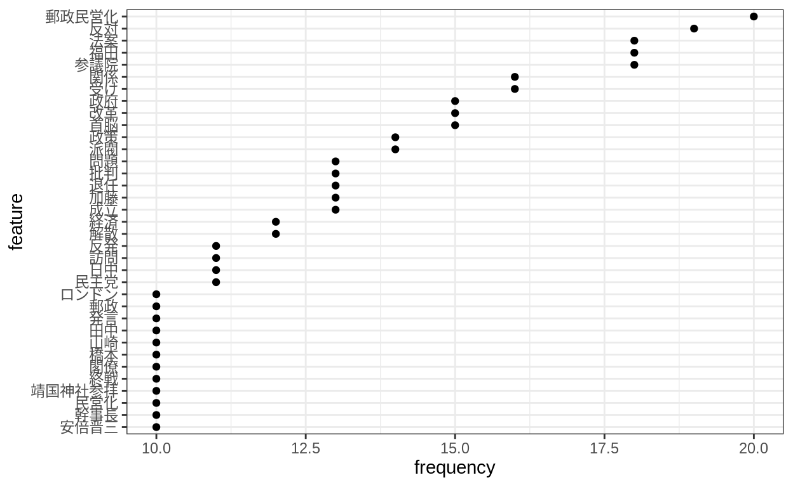
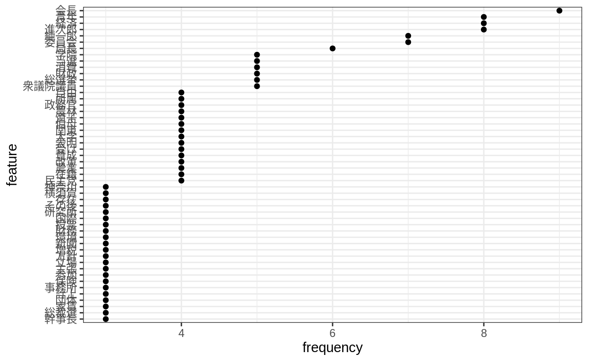
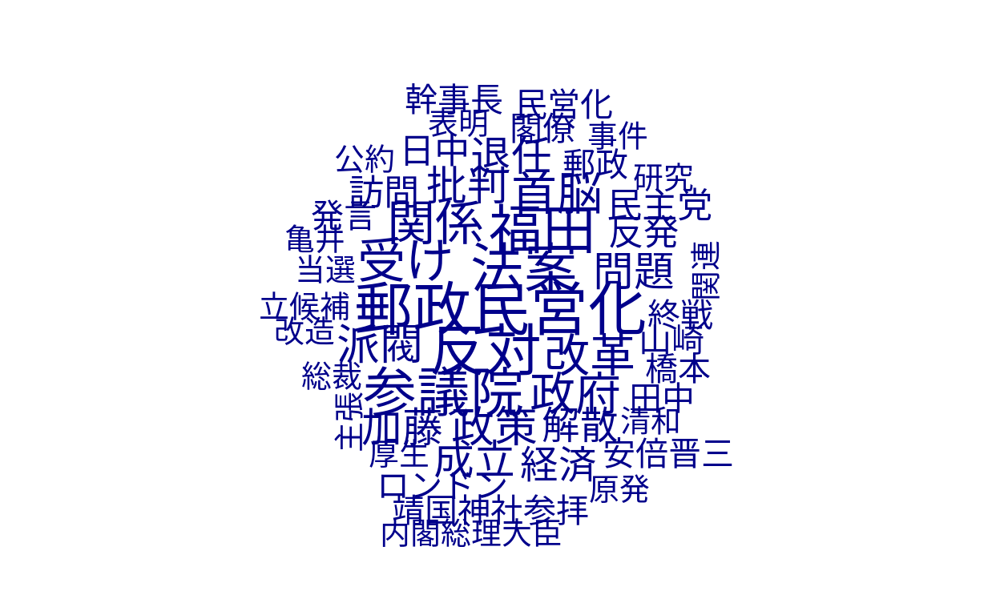
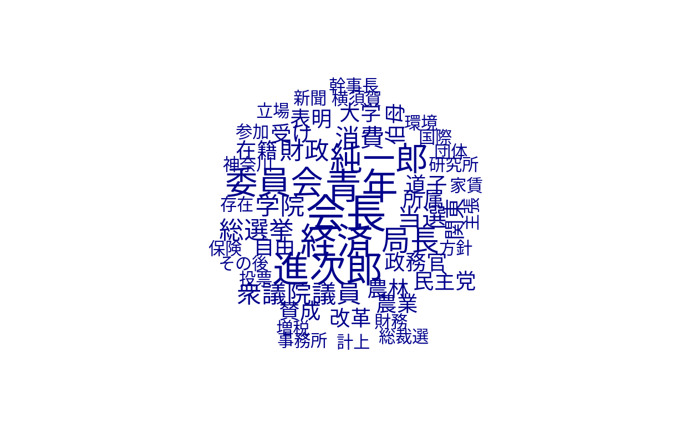

RでAPI経由でWikipediaのスクレイピングをする方法を説明します。
Twitterのスクレイピングでは10日以上前のツイートを取得できないことを知りました。 また、Googleトレンドは同時に5つまでしか取得できないのに、相対的な値しか取れません。 そこで、Wikipediaの閲覧数を取得する方法を説明します。
library(tidyverse)
── Attaching packages ─────────────────────────────────────────────────────────────── tidyverse 1.2.1 ──
✔ ggplot2 3.2.0 ✔ purrr 0.3.2
✔ tibble 2.1.3 ✔ dplyr 0.8.3
✔ tidyr 0.8.3 ✔ stringr 1.4.0
✔ readr 1.3.1 ✔ forcats 0.4.0
── Conflicts ────────────────────────────────────────────────────────────────── tidyverse_conflicts() ──
✖ dplyr::filter() masks stats::filter()
✖ dplyr::lag() masks stats::lag()
theme_set(theme_bw())Wikipediaの閲覧数はPageview AnalysisのAPIをRから叩くpageviewというパッケージを使います。
library(pageviews)
library(gtrendsR)gtrendsRも読み込んでみます。また、Wikipediaの記事の情報を取得するにはWikipediRというパッケージを使います。 （2019年7月19日追記）直接APIを叩いて情報を取得する際にはhttrというパッケージを使います。
library(WikipediR)
library(httr)
library(rvest)
Loading required package: xml2
Attaching package: 'rvest'
The following object is masked from 'package:purrr':
pluck
The following object is masked from 'package:readr':
guess_encodingpageviewsのarticle_pageview()という関数で閲覧数を取得します。 ただし、取得できるデータは2015年7月1日以降に限られます。
試しに、小泉純一郎と小泉進次郎の検索数を取得します。
wiki_trend <- article_pageviews(project = "ja.wikipedia",
article = c("小泉純一郎", "小泉進次郎"),
start = "2015070100",
end = Sys.Date())時系列のグラフにします。
wiki_trend %>%
ggplot() +
geom_line(aes(x = date, y = views, colour = article))
Googleトレンドをも取得してみます。 スパイクはかなり一致しているように見えます。
google_trend <- gtrends(keyword = c("小泉純一郎", "小泉進次郎"),
geo = "JP",
time = str_c("2015-07-01", Sys.Date(), sep = " "))
plot(google_trend)
両者が相関しているのかどうかを確認します。
full_join(wiki_trend %>%
select(date, term = article, wiki = views),
google_trend$interest_over_time %>%
select(date, term = keyword, google = hits),
by = c("date", "term")) %>%
ggplot() +
geom_point(aes(x = wiki, y = google, colour = term)) +
facet_wrap(~term)
Warning: Removed 2536 rows containing missing values (geom_point).
見にくいので両軸の対数を取ると正の相関がありそうなのが分かります。
full_join(wiki_trend %>%
select(date, term = article, wiki = views),
google_trend$interest_over_time %>%
select(date, term = keyword, google = hits),
by = c("date", "term")) %>%
ggplot() +
geom_point(aes(x = wiki, y = google, colour = term)) +
scale_x_log10() +
scale_y_log10() +
facet_wrap(~term)
Warning: Removed 2536 rows containing missing values (geom_point).
WikipediRのpage_info()で記事の情報を取得できます。 役に立ちそうな情報は記事の長さでしょうか。
wiki_info <- page_info("ja", "wikipedia", page = "小泉進次郎")
wiki_info$query$pages$`1875027`$length
[1] 33307page_content()で.htmlを取得できます。 rvestのread_html()で読み込みます。
wiki_page <- page_content("ja", "wikipedia", page_name = "小泉進次郎")
wiki_html <- wiki_page$parse$text[[1]] %>%
read_html()とりあえずpタグのテキストを抽出します。
wiki_text <- wiki_html %>%
html_nodes("p") %>%
html_text()
head(wiki_text)
[1] "小泉 進次郎（こいずみ しんじろう、1981年〈昭和56年〉4月14日 - ）は、日本の政治家。自由民主党所属の衆議院議員（4期）、自由民主党厚生労働部会長。\n"
[2] "内閣府大臣政務官兼復興大臣政務官、自民党青年局長、自民党農林部会長、自民党筆頭副幹事長などを歴任。\n"
[3] "父は第87代・第88代・第89代内閣総理大臣の小泉純一郎、兄は俳優・タレントの小泉孝太郎。\n"
[4] "小泉純一郎の次男として神奈川県横須賀市に生まれた。1982年に産まれて間もなく両親が離婚したため小泉家が引き取り、多忙な父に代わり、純一郎の実姉で同居する道子に育てられた。進次郎は伯母・道子を実の母と信じており「ママ」と呼んでいた。純一郎は道子と息子たちの関係（伯母と甥）を進次郎には伝えておらず、進次郎は中学二年生まで伯母とは知らされていなかった。孝太郎は伯母の存在を認識していたが、進次郎には伝えていなかった。中学生の進次郎は少なからずこの事実に驚いたが、2016年8月に道子が他界するまで実の母として大切にした。\n"
[5] "1988年（昭和63年）に関東学院六浦小学校に入学して、大学卒業まで関東学院で過ごす。関東学院六浦中学校・高等学校ではスポーツ、特に野球に熱中した。2004年（平成16年）3月、23歳の時に関東学院大学経済学部経営学科を卒業。その後コロンビア大学大学院に留学し、ジェラルド・カーティスに師事して、2006年（平成18年）に政治学の修士号を取得した。その後、アメリカ合衆国にある、ロンドンタビストック人間関係研究所配下の戦略国際問題研究所非常勤研究員を経て2007年（平成19年）に帰国し、それ以後は父である純一郎の私設秘書を務める。\n"
[6] "2008年（平成20年）に父・純一郎が政界引退を表明して、進次郎を後継候補に指名する。自由民主党の公認を受け、2009年（平成21年）の第45回衆議院議員総選挙に神奈川11区から出馬し、初当選。選挙戦では重複立候補を辞退し、また当時の連立与党である公明党からの選挙協力も受けなかった。地元の一部有権者からは世襲を批判されたものの父から受け継いだ強固な地盤と後援会をバックに終始優勢を維持し[2]、投票総数の過半数である150,893票（得票率57.1%）を獲得して初当選した[3]。この総選挙で初当選した5人の自民党の1期生のうち、政治や行政の経験がない唯一の新人議員である[4]。また小選挙区で当選した新人議員は小泉、橘慶一郎、伊東良孝の3人のみ。\n"文字列ベクトルを一つの文章にするときはstr_c()でオプションcollapse = ""を指定します。
wiki_text <- wiki_text %>%
str_c(collapse = "")
wiki_text
[1] "小泉 進次郎（こいずみ しんじろう、1981年〈昭和56年〉4月14日 - ）は、日本の政治家。自由民主党所属の衆議院議員（4期）、自由民主党厚生労働部会長。\n内閣府大臣政務官兼復興大臣政務官、自民党青年局長、自民党農林部会長、自民党筆頭副幹事長などを歴任。\n父は第87代・第88代・第89代内閣総理大臣の小泉純一郎、兄は俳優・タレントの小泉孝太郎。\n小泉純一郎の次男として神奈川県横須賀市に生まれた。1982年に産まれて間もなく両親が離婚したため小泉家が引き取り、多忙な父に代わり、純一郎の実姉で同居する道子に育てられた。進次郎は伯母・道子を実の母と信じており「ママ」と呼んでいた。純一郎は道子と息子たちの関係（伯母と甥）を進次郎には伝えておらず、進次郎は中学二年生まで伯母とは知らされていなかった。孝太郎は伯母の存在を認識していたが、進次郎には伝えていなかった。中学生の進次郎は少なからずこの事実に驚いたが、2016年8月に道子が他界するまで実の母として大切にした。\n1988年（昭和63年）に関東学院六浦小学校に入学して、大学卒業まで関東学院で過ごす。関東学院六浦中学校・高等学校ではスポーツ、特に野球に熱中した。2004年（平成16年）3月、23歳の時に関東学院大学経済学部経営学科を卒業。その後コロンビア大学大学院に留学し、ジェラルド・カーティスに師事して、2006年（平成18年）に政治学の修士号を取得した。その後、アメリカ合衆国にある、ロンドンタビストック人間関係研究所配下の戦略国際問題研究所非常勤研究員を経て2007年（平成19年）に帰国し、それ以後は父である純一郎の私設秘書を務める。\n2008年（平成20年）に父・純一郎が政界引退を表明して、進次郎を後継候補に指名する。自由民主党の公認を受け、2009年（平成21年）の第45回衆議院議員総選挙に神奈川11区から出馬し、初当選。選挙戦では重複立候補を辞退し、また当時の連立与党である公明党からの選挙協力も受けなかった。地元の一部有権者からは世襲を批判されたものの父から受け継いだ強固な地盤と後援会をバックに終始優勢を維持し[2]、投票総数の過半数である150,893票（得票率57.1%）を獲得して初当選した[3]。この総選挙で初当選した5人の自民党の1期生のうち、政治や行政の経験がない唯一の新人議員である[4]。また小選挙区で当選した新人議員は小泉、橘慶一郎、伊東良孝の3人のみ。\n2009年12月13日、自民党が小泉による海上自衛隊横須賀基地（神奈川県横須賀市）見学ツアーを実施した際には、50人の定員に約5200人の応募が殺到するなど、「スター不在」とされる自民党内で際立った存在と見られている[5][6]。\n2010年1月の時点で衆議院では内閣委員会、総務委員会、安全保障委員会に所属し、自民党では遊説局長代理、青年局次長、外交副部会長、財務金融副部会長、環境副部会長などの役職を兼務して、外交、財務金融、環境の3つの部会に所属していた。同年10月には自民党学生部長、新聞出版局次長にも併せて就任した。\n2011年10月に自民党青年局長、国会対策委員会委員に就任した。\n2012年4月、郵政改正法案に造反[7]しても処分されなかった。同年6月26日の消費税増税法案には賛成票を投じた。同年8月9日、国民の生活が第一など野党6党が提出した野田内閣不信任決議案の採決では、棄権方針の自民党執行部に造反し、元幹事長の中川秀直などとともに賛成票を投じた。同年9月26日の自民党総裁選挙で青年局主催の候補者公開討論会を自民党青年局長として仕切る立場であり、当初は9月19日の公開討論会後に支持候補を表明すると明言していた[8]が、人気や知名度の高い小泉の支持表明は党員票や議員票として総裁選に影響を与えると目されるとして報道が過熱したことから、「衆議院1回生の私の1票が影響を与えるのは不本意。身の程をわきまえて行動する」と述べ、総裁選が終わるまで支持表明を行わない方針を示した[9][10]。総裁選終了後に石破茂に投票したことを発表した[11]。\n同年12月の第46回衆議院議員総選挙で再選し、党職では本人の希望もあって2期目の青年局長続投となった。この選挙で自民党が大勝した結果、青年局所属議員は82人となった[12]。\n2013年9月30日、青年局長を退任し内閣府大臣政務官（経済再生、経済財政、環太平洋経済連携協定（TPP）等担当[13]）兼復興大臣政務官に就任した。\n2014年12月の第47回衆議院議員総選挙で3選。\n2015年10月23日、自民党農林部会長に就任[14]。同年12月、政府が2015年度補正予算案に、低所得の年金受給者に一人あたり3万円を支給する臨時給付金を盛り込む方針について、「軽減税率対策として6000億足りない。一方で臨時給付金の4000億は簡単に出る。これが国民にどう思われるか。」と主張[15]、これらがきっかけとなり、2016年2月、若手議員の視点からの議論を期待して、自民党財政再建に関する特命委員会の下に、「2020年以降の経済財政構想小委員会」が設置され、小泉は事務局長に就任した[16]。\n同年8月、2020年以降の経済財政構想小委員会の委員長代行に昇格しつつ[17]、自民党農林部会長に留任。党部会長の人事では小泉のみ留任となった[18]。9月に第3次安倍第2次改造内閣下で設立された内閣府規制改革推進会議から、11月に「農薬などの資材を農家に売る事業からの撤退」や「農産品の委託販売の廃止」などの組織改革を早期に行うよう迫る厳しい提言があったが、党内で話合いの末に全農による自主的な組織刷新を行うという政府・自民党の農業改革案が了承されている[19]。「全農の体制こそ農家の経営の自由を奪う存在だ」と主張し、自民農林部会長として農業改革を主導している[20][21]。\n2017年8月より柴山昌彦とともに自民党筆頭副幹事長[22]。\n同年の第48回衆議院議員総選挙で4選。\n「交渉参加に賛成。交渉の中で勝ち取るべきは勝ち取る」との立場をとる[23]。\n関西学院大学での講演の中で、「日本人は国際競争というキーワードに過激な反応を示す、TPPで自由化されたら農業はやられると感情論に走る。TPPに参加しなければ農業は発展するのか?」と述べている。他の講演でも同様の発言を行っており、TPP参加について「後ろ向きに考えず、若い人はチャンスだと思ってほしい」「新しいルールができれば、既得権益にとらわれず新たなフィールドで活躍できる」「多少の痛みはあるかもしれないが、TPP1つで日本が壊れると思わない」と述べた。 \n反対が多い党内で、賛成派は少数だけに「血まみれになっている」という[24]。\n日本経済新聞社と米国戦略国際問題研究所CSISとで設立された日経・CSISバーチャル・シンクタンクに民主党に在籍していた前原誠司・長島昭久・近藤洋介・玄葉光一郎、みんなの党に在籍していた浅尾慶一郎、自民党の林芳正・西村康稔・齋藤健・岩屋毅等と共に、政治フォーラムとして在籍している。上級アドバイザーは石破茂が務めている。CSIS上級顧問兼日本支部長であるマイケル・グリーンはCSIS在籍時に秘書として従事した上司であり、直接指導を徹底的に施して小泉を親米派として作り上げることに成功した人物であると評論家の中田安彦は解説している[25]。\n2011年1月10日にまちおこしを目的とするグループ「TEAM YOKOSUKA」を立ち上げた。Tourism（観光）、Eco & Environment（エコと環境）、America、Merchant & Manufacture（商業と工業）の頭文字から成る[26]。\n2017年4月13日、13日、小泉は日本経済新聞のインタビューに応じ、将来の社会保障制度について「真の全世代型にする」と述べた。「自民党が高齢者偏重を助長してきた面もある」という指摘に対しては 「これは政治の責任がある。60歳以上は投票率が7割、20代は3割くらいの中でどちらの声が大きいか。全ての予算の裏にはそういった人たちがいる。ここと真剣に向き合っていかないといけない。こども保険はその覚悟の表れでもある」と主張。「消費税率を引き上げる選択肢はないのか」という疑問に対しては「8％から10％に上がるのは2年後だ。使い道は決まっている。新しいことをやるには10％以上の消費増税の話を決め、理解を得て執行されない限りできない。何年かかるのか。筋論として消費税はそうだと思うが、現実的な解としてはない」と答えた[27]。経済学者の田中秀臣は、小泉は財務省の消費増税路線やその背景にある財政再建主義に親和的であると評している[28]。\n自民党内で浮上した教育国債案については、「次世代への負担のつけ回し」と批判的な立場を取る[29]。代案として社会保険料に上乗せして徴収する「こども保険」を提唱した[29]。\n事務所費三重計上\n当選以来、父親である前任の支部長時代から、事務所費の不正経理が問いただされているが、一度として説明責任を果たしたことは無い。\n自宅敷地内にあるプレハブ小屋に、実弟が代表を務める政治団体が置かれているが、なぜか家賃等の事務所費が収支報告に計上されている。\nその後、別の政治団体が置かれている市内のテナントビルに転居するも、事実より高い家賃が計上され、しかもビル管理者は2団体分の家賃を受け取ったことはないと証言している。\n小泉純一郎は国会での答弁の際「政治活動は議員それぞれ」とだけ発言し、実態を明らかにしていない。\n+ 小泉進次郎オフィシャルサイト\n"str_length()で文字列の長さを調べることができます。
str_length(wiki_text)
[1] 4003Wikipediaの記事のリンクを求めることもできます。 記事にある他のWikipedia記事へのリンク、外部サイトへのリンク、当該記事にリンクを貼っている他のWikipedia記事のリンクをそれぞれ求めることができます。
internal_link <- page_links("ja", "wikipedia", page = "小泉進次郎", limit = 500)
external_link <- page_external_links("ja", "wikipedia", page = "小泉進次郎")
back_link <- page_backlinks("ja", "wikipedia", page = "小泉進次郎")*せっかくなので、初歩的なテキスト分析を行います。 まずは、小泉純一郎と小泉進次郎のWikipediaのページを取得します。
term <- c("小泉純一郎", "小泉進次郎")
data <- NULL
for (i in term) {
text <- page_content("ja", "wikipedia", page_name = i)
text <- text$parse$text[[1]] %>%
read_html() %>%
html_nodes("p") %>%
html_text() %>%
str_c(collapse = "")
data <- tibble(term = i,
text) %>%
bind_rows(data)
}テキスト分析にはquantedaというパッケージを使うのが便利です。
library(quanteda)
Package version: 1.5.0
Parallel computing: 2 of 8 threads used.
See https://quanteda.io for tutorials and examples.
Attaching package: 'quanteda'
The following object is masked from 'package:utils':
Viewまずは、データフレームをコーパスに変換します。 コーパスとはテキストのデータという意味な気がします。
corp <- corpus(data, text_field = "text")続いてトークンを作成します。 トークンとは単語というような意味で、日本語の場合は単語で区切られていないので形態素解析をする必要があります。
MecabやChasenが形態素解析ではメジャーですが、Rで実行するのは若干面倒なので、quantedaのクイックスタートで使用されているで例を使います。
toks <- tokens(corp)
toks <- tokens_select(toks, "^[０-９ぁ-んァ-ヶー一-龠]+$", valuetype = "regex", padding = TRUE)
min_count <- 10
kanji_col <- tokens_select(toks, "^[一-龠]+$", valuetype = "regex", padding = TRUE) %>%
textstat_collocations(min_count = min_count)
toks <- tokens_compound(toks, kanji_col[kanji_col$z > 3,], concatenator = "")
kana_col <- tokens_select(toks, "^[ァ-ヶー]+$", valuetype = "regex", padding = TRUE) %>%
textstat_collocations(min_count = min_count)
toks <- tokens_compound(toks, kana_col[kana_col$z > 3,], concatenator = "")
any_col <- tokens_select(toks, "^[０-９ァ-ヶー一-龠]+$", valuetype = "regex", padding = TRUE) %>%
textstat_collocations(min_count = min_count)
toks <- tokens_compound(toks, any_col[any_col$z > 3,], concatenator = "")文章が単語に区切られたのが分かります。
head(toks$text1)
Warning: '$.tokens' is deprecated.
Use '[].tokens' instead.
See help("Deprecated")
[1] "小泉" "進次郎" "" "こ" "いずみ" "しん"
head(toks$text2)
Warning: '$.tokens' is deprecated.
Use '[].tokens' instead.
See help("Deprecated")
[1] "小泉" "純一郎" "" "こ" "いずみ" "じゅんいち"最後に、トークンを文書行列にします。 文書行列とは各テキストを単語のベクトルにしたものです。
wiki_dfm <- dfm(toks, remove = "") %>%
dfm_remove("^[ぁ-ん]+$", valuetype = "regex", min_nchar = 2) %>%
dfm_trim(min_termfreq = 0.50, termfreq_type = "quantile", max_termfreq = 0.99)各記事の上位30の単語頻度を求めてみます。
freq <- textstat_frequency(wiki_dfm, group = "term")
freq %>%
filter(group == "小泉純一郎") %>%
filter(rank <= 30) %>%
mutate(feature = feature %>%
fct_inorder() %>%
fct_rev()) %>%
ggplot(aes(x = feature, y = frequency)) +
geom_point() +
coord_flip()
freq %>%
filter(group == "小泉進次郎") %>%
filter(rank <= 30) %>%
mutate(feature = feature %>%
fct_inorder() %>%
fct_rev()) %>%
ggplot(aes(x = feature, y = frequency)) +
geom_point() +
coord_flip()
ワードクラウドを作成します。
dfm_subset(wiki_dfm, term == "小泉純一郎") %>%
textplot_wordcloud(max_words = 50)
dfm_subset(wiki_dfm, term == "小泉進次郎") %>%
textplot_wordcloud(max_words = 50)
（2010年7月19日追記）直接APIを叩いてWikipediaの記事の作成日を取得してみます。
まず、検索したい単語のベクトルを作成します。
key.words <- c("新世紀エヴァンゲリオン", "魔法少女まどか☆マギカ", "けものフレンズ")続いて、作成日を格納する空のベクトルを作成します。
wiki.date <- NULL最後に、ループによって各単語の記事の作成日を取得します。
for (i in key.words) {
wiki.date <- c(wiki.date,
GET("https://ja.wikipedia.org/w/api.php",
query = list(action = "query",
prop = "revisions",
rvlimit = 1,
rvprop = "timestamp",
rvdir = "newer",
titles = i,
format = "json")) %>%
content("text") %>%
str_extract("[0-9]+-[0-9]+-[0-9]+"))
}念のため、データフレームにしておきます。
df <- tibble(key.words,
wiki.date)
df
# A tibble: 3 x 2
key.words wiki.date
<chr> <chr>
1 新世紀エヴァンゲリオン 2003-06-25
2 魔法少女まどか☆マギカ 2010-10-30
3 けものフレンズ 2016-04-16